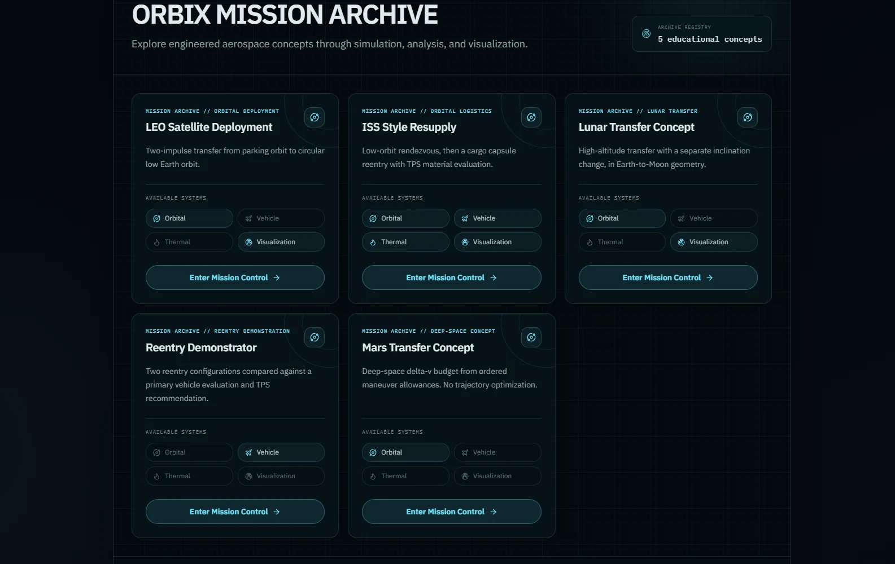

Work
ORBIX
An aerospace application for looking closely at real vehicles — aircraft and rocket profiles, side-by-side comparison, an engineering lab, mission control and replay, and a research section.
What it does
ORBIX connects landmark aircraft and launch vehicles to the orbital mechanics, entry physics, and thermal analysis behind them, and keeps every value attached to the source it came from. You can browse the registries, open a profile for a single vehicle, put vehicles side by side, work through the engineering lab, run and replay a mission, and read the learning material.

Surfaces
Eleven, as built.
- Home
- Aircraft exploration
- Aircraft profiles
- Rocket exploration
- Rocket profiles
- Compare
- Engineering Lab
- Mission Control
- Mission Replay
- Learn and Research
- Showcase